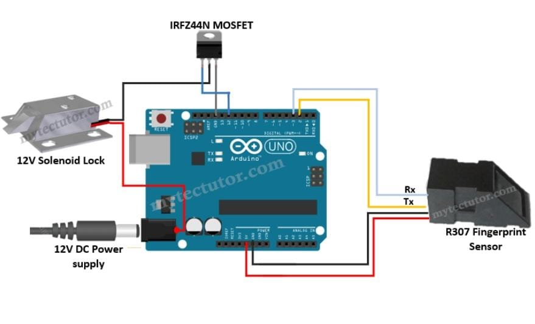
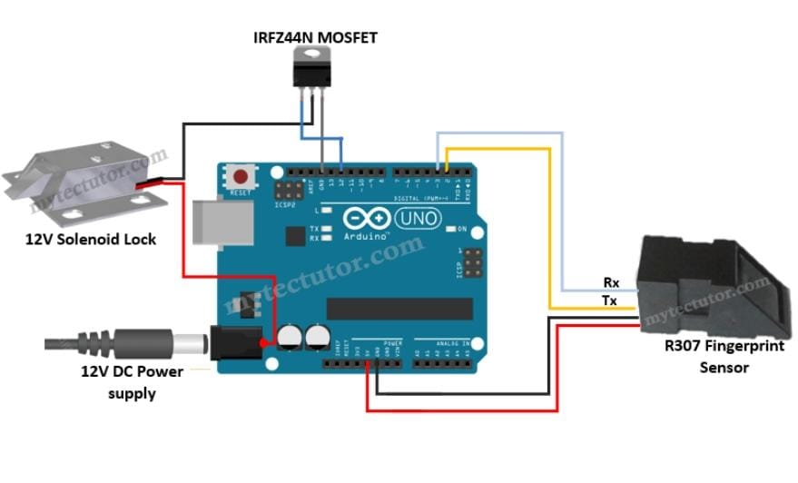

IoT-Based Keypad Door Locker
 

The Keypad Door Locker is a secure IoT-based access control system that uses a numeric keypad, Arduino Uno, and an LED display for enhanced functionality. It is designed to restrict unauthorized access and offer a smart solution for home and office security.
🔧 Components Used:
- Arduino Uno
- 4x4 Matrix Keypad
- 16x2 LED Display
- Buzzer
- Servo Motor (for locking mechanism)
- Wires and Breadboard
- Power Source
💡 Working:
When the user inputs a password through the keypad, it is checked against a preset value stored in the Arduino. If the password is correct, the servo motor rotates to unlock the door. If the password is incorrect, the buzzer beeps to notify the user. The LCD displays messages such as "Enter Password", "Access Granted", or "Wrong Password".
This project demonstrates the integration of hardware components to build an effective real-world application. It's ideal for learning basic embedded systems, electronics, and security design.
📌 Applications:
- Smart Home Security
- Office Entry Systems
- School Locker Systems